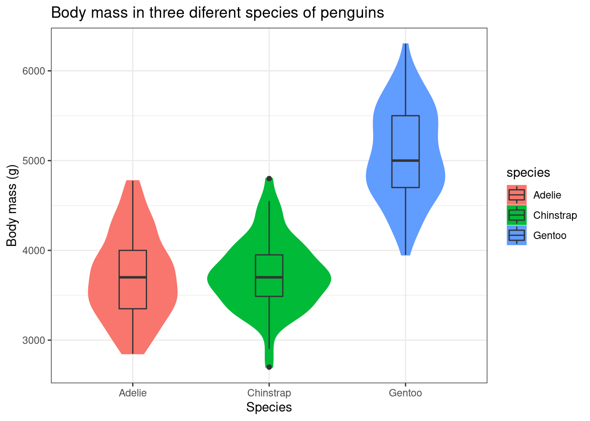

install.packages("ggplot2")
library(ggplot2)Chapter 1: Data visualization using ggplot2
Learn how to plot different types of graphs using the ggplot2 package.
1 Introduction to ggplot2 package
In this chapter we will be plotting different types of graphs using a package called ggplot2 in R. The ggplot2 package is based on ‘grammar of graphics plot’ which provides a systematic way of doing data visualizations in R. With a few lines of code you can plot a simple graph and by adding more layers onto it you can create complex yet elegant data visualizations.
A ggplot2 graph is made up of three components.
- Data: Data of your choice that you want to visually summarise.
-
Geometry or geoms: Geometry dictates the type of graph that you want to plot and this information is conveyed to ggplot2 through the
geom()command code. For e.g. using thegeom_boxplot()command, you can plot a box plot with your data. Likewise, there are many types of geometry that you can plot using the ggplot2 package. -
Aesthetic mappings: Aesthetics define the different kinds of information that you want to include in the plot. One fo the most important aesthetic is in choosing which data values to plot on the x-axis and the y-axis. Another example is changing the colour of the data points, which can be used to differentiate two different categories in the data. The use of aesthetics depends on the geometry that you are using. We use the command
aes()for adding different types of aesthetics to the plot. We will learn more aboutaes()in Chapter 2.
This tutorial is primarily focused on students who are beginners in R programming and wants to quickly plot their data without much of a hassle. So without further ado let’s plot some graphs!
2 Setting up the prerequisites
First, we need to install the ggplot2 package in R as it does not come in the standard distribution of R.
- To install packages in R we use the command
install.packages()and to load packages we use the commandlibrary(). Therefore to install and loadggplot2package we use the following lines of command.
All right we have the ggplot2 package loaded, now we just need some data to plot. Most R programming tutorials use the iris dataset as an example. But this tutorial won’t be like most tutorials. So let me introduce you to some lovely penguins from Palmer Station in Antarctica!
For this tutorial, we will be installing the palmerpenguins package which showcases body measurements taken from three different species of penguins from Antarctica. This package was made possible by the efforts of Dr. Allison Horst. The penguin data was collected and made available by Dr. Kristen Gorman and the Palmer Station, Antarctica LTER.
- Install the
palmerpenguinspackage and load it in R.
install.packages("palmerpenguins")
library(palmerpenguins)Now there are two datasets in this package. We will be using the penguins dataset which is a simplified version of the raw data present in the package.
- Use the command
head()to display the first few values ofpenguinsdataset to see how it looks like
library(palmerpenguins)
knitr::kable(head(penguins))| species | island | bill_length_mm | bill_depth_mm | flipper_length_mm | body_mass_g | sex | year |
|---|---|---|---|---|---|---|---|
| Adelie | Torgersen | 39.1 | 18.7 | 181 | 3750 | male | 2007 |
| Adelie | Torgersen | 39.5 | 17.4 | 186 | 3800 | female | 2007 |
| Adelie | Torgersen | 40.3 | 18.0 | 195 | 3250 | female | 2007 |
| Adelie | Torgersen | NA | NA | NA | NA | NA | 2007 |
| Adelie | Torgersen | 36.7 | 19.3 | 193 | 3450 | female | 2007 |
| Adelie | Torgersen | 39.3 | 20.6 | 190 | 3650 | male | 2007 |
We can see that are 8 columns in the dataset representing different values. Now let us try plotting some graphs with this data.
2.1 Bar graph
So we will try to plot a simple bar graph first. Bar graphs are used to represent categorical data where the height of the rectangular bar represents the value for that category. We will plot a bargraph representing frequency data for all three species of penguins.
- We will be using the
geom_bar()command to plot the bar graph. Let us also use the commandtheme_bw()for a nice looking theme.

2.2 Histogram
Histograms are similar to bar graphs visually. But histograms are used to represent continuous data. Also the all the rectangular bars will have the same bin size or width.
- We can plot a histogram using the command
geom_histogram().
library(ggplot2)
library(palmerpenguins)
ggplot(data = penguins, aes(x = body_mass_g, fill = species)) +
xlab("Body Mass (g)") + ylab("Frequency") +
ggtitle("Frequency of individuals for respective body mass") +
geom_histogram(bins = 25) + theme_bw()
The warning message indicates that for two rows in the dataset, they have NA values or that they did not have any values present. This is true for real-life cases, as during data collection sometimes you will be unable to collect data due to various reasons. So this is perfectly fine.
2.3 Line graph
Line graph simply joins together data points to show overall distribution.
- Use the command
geom_line()for plotting a line graph.

2.4 Scatter plot
The scatter plot simply denotes the data points in the dataset.
- Use the command
geom_point()to plot a scatter plot.

2.5 Density Plot
Density plots are similar to histograms but show it shows the overall distribution of the data in a finer way. This way we will get a bell-shaped curve if our data follows a normal distribution.
- Use the command
geom_density()to a density plot.
library(ggplot2)
library(palmerpenguins)
ggplot(data = penguins, aes(x = body_mass_g, fill = species)) +
xlab("Body Mass (g)") + ylab("Density") + ggtitle("Body mass distribution") +
geom_density() + theme_bw()
Since we plotted for all three species the graph looks clustered. Let us try plotting the same graph for only gentoo penguins. We will use the dplyr package to filter() data for gentoo penguins alone. The dplyr package comes in-built with R so just load the dplyr package using the command library().
library(ggplot2)
library(palmerpenguins)
library(dplyr)
penguins_gentoo <- penguins %>% filter(species == "Gentoo")
ggplot(data = penguins_gentoo, aes(x = body_mass_g)) +
xlab("Body Mass of Gentoo penguins (g)") + ylab("Density") +
ggtitle("Body mass distribution of Gentoo penguins") +
geom_density(fill = "red") + theme_bw()
2.6 Dot-plot
Dot-plot is similar to a density plot but it shows discretely each data point in the distribution.
- Use the command
geom_dotplot()to plot a dot-plot.

2.7 Rug-plot
Rug-plot is a simple way to visualize the distribution of data along the axis lines. It is often used in conjunction with other graphical representations.
- Use the command
geom_rug()to plot a rug-plot.
library(ggplot2)
library(palmerpenguins)
library(dplyr)
penguins_gentoo <- penguins %>% filter(species == "Gentoo")
ggplot(data = penguins_gentoo, aes(x = body_mass_g, y = flipper_length_mm)) +
xlab("Body Mass of Gentoo penguins (g)") + ylab("Density") +
ggtitle("Body mass distribution of Gentoo penguins") +
geom_point(colour = "darkred") + geom_rug() + theme_bw()
2.8 Box plot
Box-plot is one of the better ways of showing data via quartiles. You can learn more about box plots here.
- Use the command
geom_boxplot()to plot a box-plot.

2.9 Violin plot
Violin plot can be considered as the best of both a box-plot and a density plot. It shows the quartile values, like in a box-plot and also shows the distribution of the data, like in a density plot.
- Use the command
geom_violin()in conjunction withgeom_boxplot()to plot a violin plot.
library(ggplot2)
library(palmerpenguins)
ggplot(data = penguins, aes(x = species, y = body_mass_g, fill = species)) +
xlab("Species") + ylab("Body mass (g)") +
ggtitle("Body mass in three diferent species of penguins") +
geom_violin(aes(colour = species), trim = TRUE) + geom_boxplot(width = 0.2) +
theme_bw()
3 Saving your ggplot2 graphs
- Use the command
ggsave()to save the graph locally. In the code below, ‘my_graph’ is the ggplot element containing your graph. The plot will be saved in your working directory.
library(ggplot2)
library(palmerpenguins)
my_graph <- ggplot(data = penguins, aes(x = species, y = body_mass_g,
fill = species)) +
xlab("Species") + ylab("Body mass (g)") +
ggtitle("Body mass in three diferent species of penguins") +
geom_violin(aes(colour = species), trim = TRUE) +
geom_boxplot(width = 0.2) +
theme_bw()
#to save the plot
ggsave(my_graph, filename = "your_graph_name.png", width = 20, height = 20,
units = "cm")4 Summary
I hope this tutorial helped you to get familiarized with the ggplot2 commands. There are many more different types of graphs that you can plot using ggplot2. The tutorial only showed some of the commonly used ones. The best way to learn R is through actually doing it yourself. Try to recreate the examples given in this tutorial by yourself and then try what you learned with the different datasets available in R. Have a good day!
5 References
H. Wickham. ggplot2: Elegant Graphics for Data Analysis. Springer-Verlag New York, 2016. Read more about ggplot2 here. You can also look at the cheat sheet for all the syntax used in
ggplot2. Also check this out.Horst AM, Hill AP, Gorman KB (2020). palmerpenguins: Palmer Archipelago (Antarctica) penguin data. R package version 0.1.0. https://allisonhorst.github.io/palmerpenguins/. doi: 10.5281/zenodo.3960218.
Last updated on
[1] "2022-05-19 20:09:03 IST"Citation
BibTeX citation:
@online{johnson2021,
author = {Jewel Johnson},
title = {Chapter 1: {Data} Visualization Using Ggplot2},
date = {02/12/2021},
langid = {en}
}
For attribution, please cite this work as:
Jewel Johnson. 2AD–12AD. “Chapter 1: Data Visualization Using
Ggplot2.” 2AD–12AD.